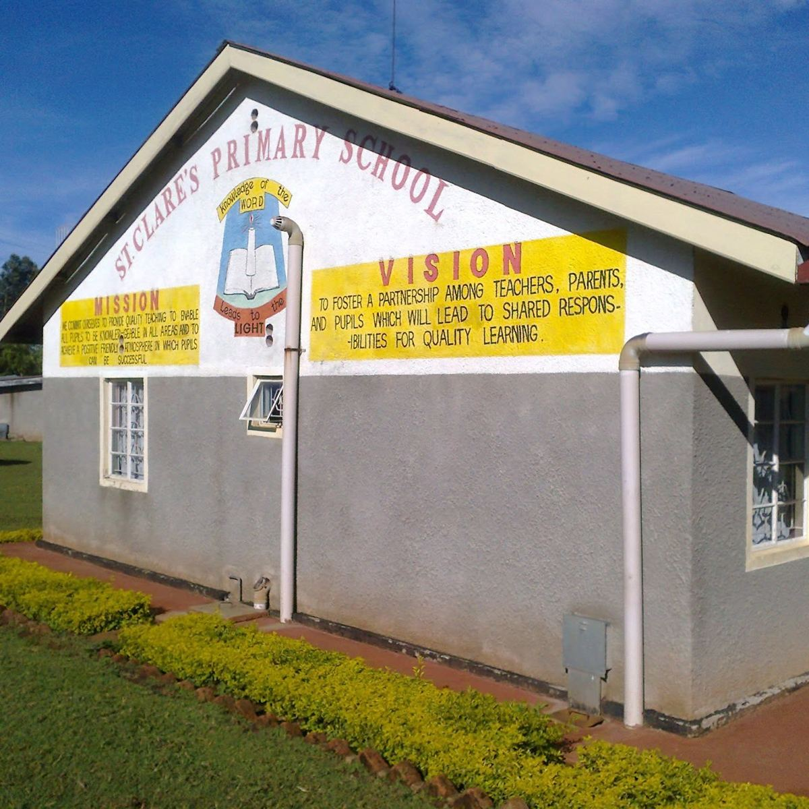

A caring school in Kiptere
Education is a partnership between school and home. We welcome families who want a caring, faith-centred start for their children.
St. Clare’s is a mixed school offering both day and boarding places, just off the Kericho-Sondu highway, near St. Francis Catholic Church.

Learning and school life
Learning is matched to each stage of a child’s growth.
Lower Primary
Grades 1 to 3
Fluent reading, number sense and good study habits.
Upper Primary
Grades 4 to 6
Deeper learning in science, languages and creative arts.
Day school
Home each evening
Learners come in each morning and return to their families after school.
Boarding
Boarders
Boarding places are available. Ask the office about space and what to bring.
Visit us, or send a message
Parents can ask about places, fees or a school visit.
- Phone: 0768 837517 or 0796 292697
- Post: P.O. Box 39, Kiptere, 20213 Kericho
- Location: Kericho-Sondu highway, Kiptere, near St. Francis Catholic Church